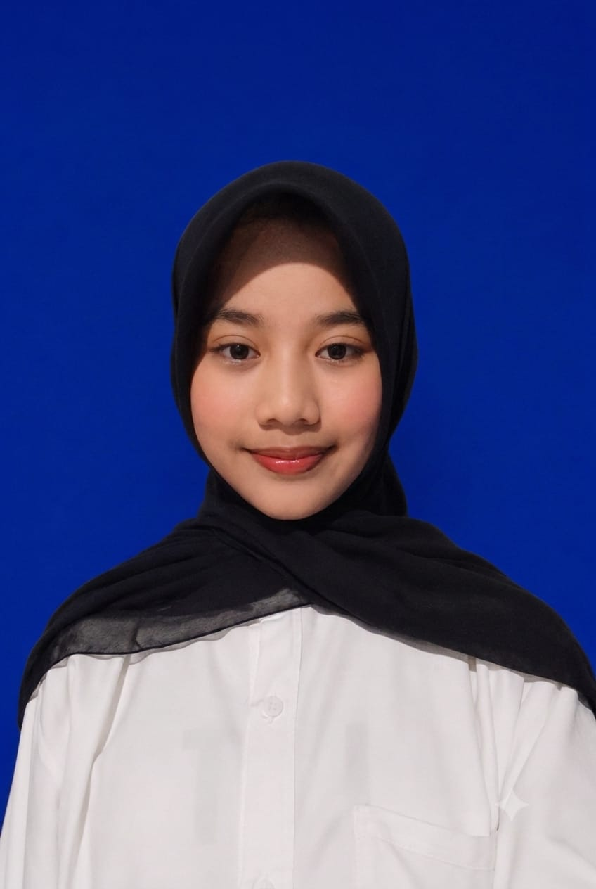

HTML & CSS
Membuat struktur halaman website dan mengatur tampilannya agar rapi, menarik, serta responsif.
saya pelajar Rekayasa Perangkat Lunak yang suka belajar membuat website, mencoba hal baru, dan mengubah ide sederhana menjadi karya digital yang menarik.
✦ Sedang bertumbuh, belajar, dan berkarya sedikit demi sedikit.

Setiap karya dimulai dari rasa ingin tahu dan keberanian untuk mencoba.
Belajar hal baru hari ini untuk membuat karya yang lebih baik esok hari.
Saya adalah pelajar jurusan Rekayasa Perangkat Lunak (RPL) di SMK Negeri Manonjaya. Saya tertarik pada dunia teknologi, pengembangan website, dan desain digital.
Saya senang mengeksplorasi ide, belajar dari proses, dan mengembangkan kemampuan melalui tugas sekolah maupun proyek pribadi. Saya berusaha menjadi pribadi yang disiplin, bertanggung jawab, kreatif, dan mau terus berkembang.
Kemampuan yang terus saya latih lewat praktik dan pengalaman.
Membuat struktur halaman website dan mengatur tampilannya agar rapi, menarik, serta responsif.
Mempelajari logika pemrograman dan membuat fitur website yang dapat memproses data.
Menyimpan, mengelola, dan menampilkan data menggunakan database.
Menyusun desain presentasi, profil perusahaan, dan konten visual yang informatif.
Berkomunikasi, berbagi tugas, dan berkolaborasi saat mengerjakan proyek bersama.
Mencari ide dan mencoba solusi baru saat merancang desain maupun menyelesaikan tugas.
Ini adalah beberapa karya yang saya buat sambil belajar dan mengembangkan kemampuan.
Konsep ulang tampilan website dengan gaya modern, navigasi yang lebih jelas, serta perpaduan warna yang segar.
Tanya tentang proyek ↗Aplikasi latihan untuk mengelola data pelanggan, paket laundry, transaksi, dan laporan menggunakan PHP Native serta MySQL.
Tanya tentang proyek ↗Menyusun materi profil perusahaan dalam bentuk presentasi yang ringkas, teratur, dan mudah dipahami.
Tanya tentang proyek ↗Perjalanan belajar yang membentuk minat dan kemampuanku.
Mempelajari dasar pemrograman, pembuatan website, pengelolaan database, dan perancangan solusi digital melalui pembelajaran serta proyek sekolah.
Mengikuti kegiatan Pramuka, seni tari, seni modern, serta kegiatan lomba poster dan poster digital untuk melatih kreativitas dan kerja sama.
Terus berlatih membuat aplikasi, merancang tampilan website, dan menyusun desain digital untuk menambah pengalaman serta kemampuan.
Belajar dan berkembang melalui pengalaman langsung di dunia kerja.
Saya mendapatkan pengalaman Praktik Kerja Lapangan (PKL) di Access Media Tasikmalaya. Selama kegiatan PKL, saya belajar mengenal lingkungan kerja secara langsung, meningkatkan kedisiplinan, tanggung jawab, serta kemampuan berkomunikasi dan bekerja sama.
Salah satu pengalaman saya adalah membuat desain profil perusahaan menggunakan Canva sebagai media informasi dan presentasi perusahaan. Pengalaman ini membantu saya mengembangkan kreativitas, keterampilan desain digital, dan kepercayaan diri saat mempresentasikan hasil karya.
Terima kasih sudah mampir ke portofolioku. Yuk, terhubung dan berbagi ide baik!
💬 Hubungi saya lewat WhatsApp ↗